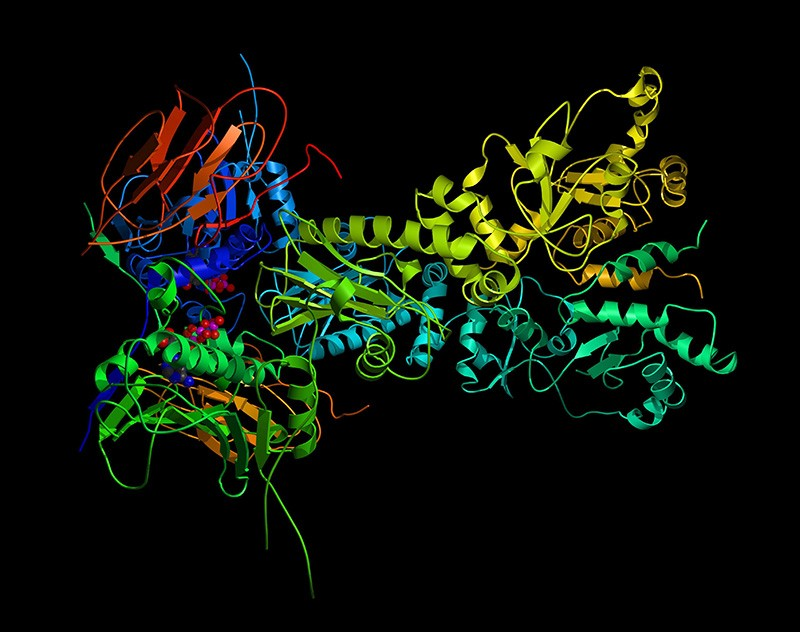
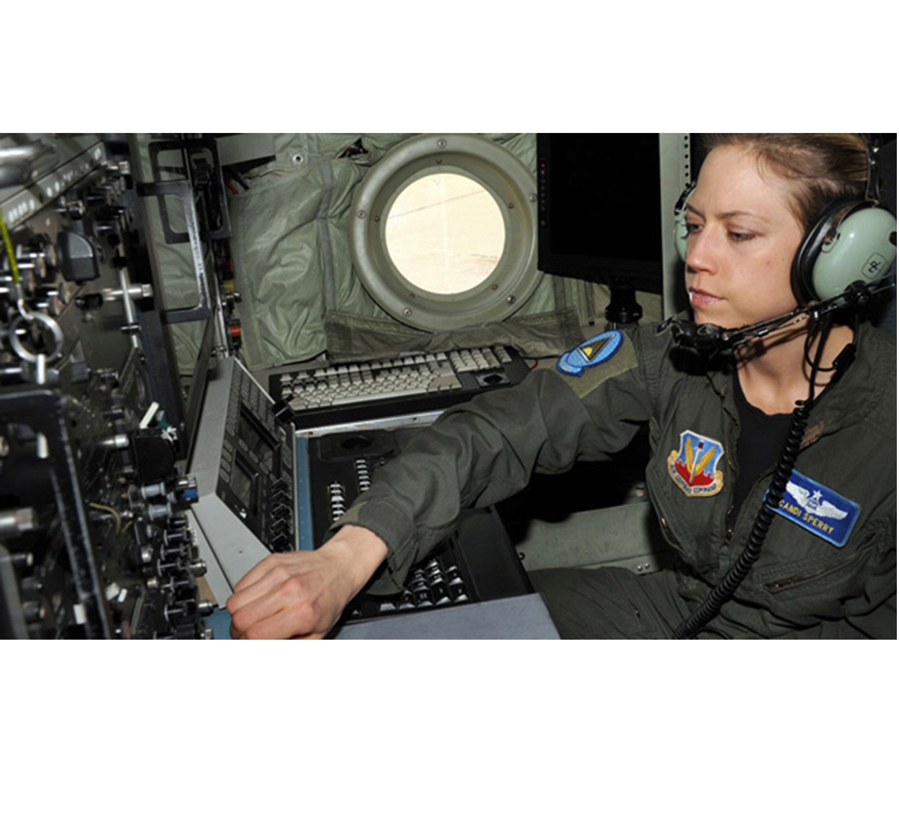

Professional
Click on the images for details.
Protein Data Bank. Implemented and automated biological algorithms from break-through papers to determine physical properties of proteins.">
Booz Allen Hamilton, July 2019 - Jan 2020. Developed data pipelines, analysis, and novel visualizations for the Fairfax County Fire & Rescue team. Effort was to recommend a redistribution of emergency vehicles in order to better minimize average response times to incidents. Major tools used were Python and Tableau. *Won award on the project for novel visualizations and efficient data pipelining.">
Booz Allen Hamilton, Feb 2020 - June 2020. Led development of Excel-based, goal-programming tool to address the best way to distribute linguists within the Navy and Marine Corps. Integrated open-source tools to expand the capabilities of Excel's 'solver' to meet the scale of the optimization problem. *Won award on the project for implementation effectiveness, ability to communicate the concepts of the algorithm to both teammates and clients, and for smooth model runs throughout the projects lifecycle.">
Booz Allen Hamilton, Feb 2020 - July 2020. Led development of Python codebase to rebaseline the Common Workforce Analysis Tool (CWAT), a workforce-workload analysis tool (Excel) utilized by many branches within the government for Foreign Military Sales. Codebase included a data pipeline, a stock-flow model, Plotly graphics, a dynamic Streamlit dashboard, and intensive flexibility within each feature in order to experiment with variable exploration and CWAT model assumptions.">
Recreational
My personal projects that I work on in my free time.
work-in-progress. Developing predictive model to estimate selling price of an item up for bid on Ebay. Intending to use CNN to process item image, RNN for item text, and overall linear regression or random tree regressor to predict final price. Utilizing Python, the Ebay API, and Linux CRON-jobs to build out my dataset automatically and on a daily basis to have data at many different points in time before they sell.">